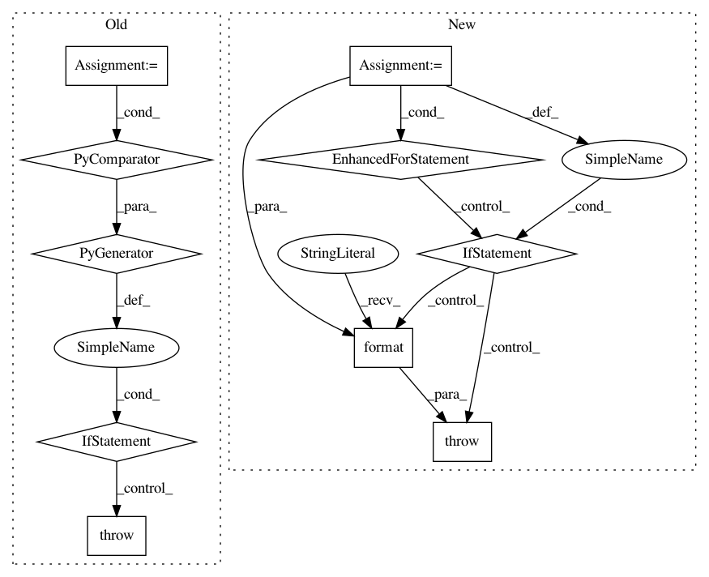

dbfe2afe79ac497075e50a3e569a1d63a346fb4d,pyemma/_base/serialization/serialization.py,SerializableMixIn,_validate_interpolation_map,#SerializableMixIn#,142
Before Change
// check for valid operations: add, rm, mv
valid_ops = ("set", "rm", "mv")
if not all(action[0] in valid_ops for actions in inter_map.itervalues() for action in actions):
raise DeveloperError("Your _serialize_interpolation_map contains invalid operations. "
"Valid ops are: {}".format(valid_ops))
self._serialize_interpolation_map = inter_map
def __interpolate(self, state):
// Lookup attributes in interpolation map according to version number of the class.
After Change
if not isinstance(v, (list, tuple)):
raise DeveloperError("actions per version have to be list or tuple")
for action in v:
if action[0] not in valid_ops:
raise DeveloperError("Your _serialize_interpolation_map contains invalid operations. "
"Valid ops are: {valid_ops}. You provided {provided}"
.format(valid_ops=valid_ops, provided=action[0]))
self._serialize_interpolation_map = inter_map
def __interpolate(self, state):
// Lookup attributes in interpolation map according to version number of the class.
In pattern: SUPERPATTERN
Frequency: 3
Non-data size: 10
Instances
Project Name: markovmodel/PyEMMA
Commit Name: dbfe2afe79ac497075e50a3e569a1d63a346fb4d
Time: 2017-04-06
Author: m.scherer@fu-berlin.de
File Name: pyemma/_base/serialization/serialization.py
Class Name: SerializableMixIn
Method Name: _validate_interpolation_map
Project Name: Qiskit/qiskit-aqua
Commit Name: 2aae12b10a3411009a2802a077bb8c6c0365b6ad
Time: 2020-08-28
Author: 31178928+t-imamichi@users.noreply.github.com
File Name: qiskit/aqua/operators/converters/abelian_grouper.py
Class Name: AbelianGrouper
Method Name: group_subops
Project Name: scikit-learn/scikit-learn
Commit Name: fcc2624ae4d70e050424b7786775e39c81357aa6
Time: 2019-09-09
Author: martinagonzalezvilas@gmail.com
File Name: sklearn/dummy.py
Class Name: DummyClassifier
Method Name: fit